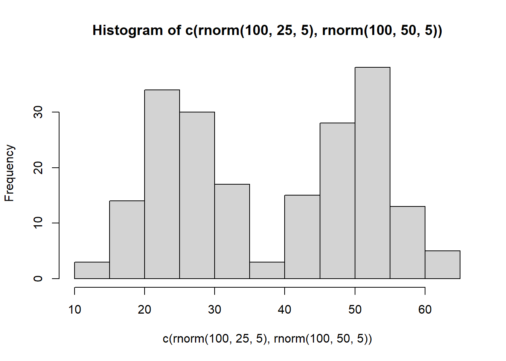

Section 2 Module 2 Lab: Descriptive Statistics
Describing comic sensibility is near impossible. It’s sort of an abstract silliness, that sometimes the joke isn’t the star. —Dana Carvey
The purpose of this lab is to show you how to compute basic descriptive statistics, including measures of central tendency (mean, mode, median) and variation (range, variance, standard deviation).
2.1 General Goals
- Compute measures of central tendency using software
- Compute measures of variation using software
- Ask some questions of a data set using descriptive statistics
2.1.1 Important info
We will be using data from the gapminder project. You can download a small snippet of the data in .csv format from this link (note this dataset was copied from the gapminder library for R) gapminder.csv. If you are using R, then you can install the gapminder package. This method is described later in the R section.
2.2 R
2.2.1 Descriptives basics in R
We learned in lecture and from the textbook that data we want to use ask and answer questions often comes with loads of numbers. Too many numbers to look at all at once. That’s one reason we use descriptive statistics. To reduce the big set of numbers to one or two summary numbers that tell use something about all of the numbers. R can produce descriptive statistics for you in many ways. There are base functions for most of the ones that you want. We’ll go over some R basics for descriptive statistics, and then use our new found skills to ask some questions about real data.
2.2.1.1 Making numbers in R
In order to do descriptive statistics we need to put some numbers in a variable. You can also do this using the c() command, which stands for combine
my_numbers <- c(1,2,3,4)There a few other handy ways to make numbers. We can use seq() to make a sequence. Here’s making the numbers from 1 to 100
one_to_one_hundred <- seq(1,100,1)We can repeat things, using rep. Here’s making 10 5s, and 25 1s:
rep(10,5)## [1] 10 10 10 10 10rep(1,25)## [1] 1 1 1 1 1 1 1 1 1 1 1 1 1 1 1 1 1 1 1 1 1 1 1 1 1all_together_now <- c(rep(10,5),rep(1,25)) 2.2.1.2 Sum
Let’s play with the number 1 to 100. First, let’s use the sum() function to add them up
one_to_one_hundred <- seq(1,100,1)
sum(one_to_one_hundred)## [1] 50502.2.1.3 Length
We put 100 numbers into the variable one_to_one_hundred. We know how many numbers there are in there. How can we get R to tell us? We use length() for that.
length(one_to_one_hundred)## [1] 1002.2.2 Central Tendency
2.2.2.1 Mean
Remember the mean of some numbers is their sum, divided by the number of numbers. We can compute the mean like this:
sum(one_to_one_hundred)/length(one_to_one_hundred)## [1] 50.5Or, we could just use the mean() function like this:
mean(one_to_one_hundred)## [1] 50.52.2.2.2 Median
The median is the number in the exact middle of the numbers ordered from smallest to largest. If there are an even number of numbers (no number in the middle), then we take the number in between the two (decimal .5). Use the median function. There’s only 3 numbers here. The middle one is 2, that should be the median
median(c(1,2,3))## [1] 22.2.2.3 Mode
R does not a base function for the Mode. You would have to write one for yourself. Here is an example of writing your own mode function, and then using it. Note I searched how to do this on Google, and am using the mode defined by this answer on stack overflow
Remember, the mode is the most frequently occurring number in the set. Below 1 occurs the most, so the mode will be one.
my_mode <- function(x) {
ux <- unique(x)
ux[which.max(tabulate(match(x, ux)))]
}
my_mode(c(1,1,1,1,1,1,1,2,3,4))## [1] 12.2.3 Variation
We often want to know how variable the numbers are. We are going to look at descriptive statistics to describe this such as the range, variance, the standard deviation, and a few others.
First, let’s remind ourselves what variation looks like (it’s when the numbers are different). We will sample 100 numbers from a normal distribution (don’t worry about this yet), with a mean of 10, and a standard deviation of 5, and then make a histogram so we can see the variation around 10..
sample_numbers <- rnorm(100,10,5)
hist(sample_numbers)
2.2.3.1 range
The range is the minimum and maximum values in the set, we use the range function.
range(sample_numbers)## [1] -0.876094 21.2415472.2.3.2 var = variance
We can find the sample variance using var. Note, divides by (n-1)
var(sample_numbers)## [1] 30.486352.2.3.3 sd = standard deviation
We find the sample standard deviation us SD. Note, divides by (n-1)
sd(sample_numbers)## [1] 5.521445Remember that the standard deviation is just the square root of the variance, see:
sqrt(var(sample_numbers))## [1] 5.5214452.2.3.4 All Descriptives
Let’s put all of the descriptives and other functions so far in one place:
sample_numbers <- rnorm(100,10,5)
sum(sample_numbers)## [1] 1109.463length(sample_numbers)## [1] 100mean(sample_numbers)## [1] 11.09463median(sample_numbers)## [1] 11.15227my_mode(sample_numbers)## [1] 4.598706range(sample_numbers)## [1] -2.076534 24.469444var(sample_numbers)## [1] 27.09572sd(sample_numbers)## [1] 5.2053552.2.4 Descriptives by conditions
Sometimes you will have a single variable with some numbers, and you can use the above functions to find the descriptives for that variable. Other times (most often in this course), you will have a big data frame of numbers, with different numbers in different conditions. You will want to find descriptive statistics for each the sets of numbers inside each of the conditions. Fortunately, this is where R really shines, it does it all for you in one go.
Let’s illustrate the problem. Here I make a date frame with 10 numbers in each condition. There are 10 conditions, each labelled, A, B, C, D, E, F, G, H, I, J.
scores <- rnorm(100,10,5)
conditions <- rep(c("A","B","C","D","E","F","G","H","I","J"), each =10)
my_df <- data.frame(conditions,scores)If you look at the my_df data frame, you will see it has 100 rows, there are 10 rows for each condition with a label in the conditions column, and 10 scores for each condition in the scores column. What if you wanted to know the mean of the scores in each condition? You would want to find 10 means.
The slow way to do it would be like this:
mean(my_df[my_df$conditions=="A",]$scores)## [1] 9.57777mean(my_df[my_df$conditions=="B",]$scores)## [1] 9.938211mean(my_df[my_df$conditions=="C",]$scores)## [1] 11.51113# and then keep goingNobody wants to do that! Not, me I stopped doing it that way, you should to.
2.2.4.1 group_by and summarise
We can easily do everything all at once using the group_by and summarise function from the dplyr package. Just watch
library(dplyr)##
## Attaching package: 'dplyr'## The following objects are masked from 'package:stats':
##
## filter, lag## The following objects are masked from 'package:base':
##
## intersect, setdiff, setequal, unionmy_df %>%
group_by(conditions) %>%
summarise(means = mean(scores))## # A tibble: 10 x 2
## conditions means
## <chr> <dbl>
## 1 A 9.58
## 2 B 9.94
## 3 C 11.5
## 4 D 10.7
## 5 E 7.77
## 6 F 10.2
## 7 G 10.8
## 8 H 9.08
## 9 I 13.2
## 10 J 11.5A couple things now. First, the print out of this was ugly. Let’s fix that. we put the results of our code into a new variable, then we use knitr::kable to print it out nicely when we knit the document
summary_df <- my_df %>%
group_by(conditions) %>%
summarise(means = mean(scores))
knitr::kable(summary_df)| conditions | means |
|---|---|
| A | 9.577770 |
| B | 9.938211 |
| C | 11.511132 |
| D | 10.732302 |
| E | 7.771861 |
| F | 10.227803 |
| G | 10.812949 |
| H | 9.077618 |
| I | 13.180095 |
| J | 11.463845 |
2.2.4.2 multiple descriptives
The best thing about the dplyr method, is that we can add more than one function, and we’ll get more than one summary returned, all in a nice format, let’s add the standard deviation:
summary_df <- my_df %>%
group_by(conditions) %>%
summarise(means = mean(scores),
sds = sd(scores))
knitr::kable(summary_df)| conditions | means | sds |
|---|---|---|
| A | 9.577770 | 5.752385 |
| B | 9.938211 | 3.558421 |
| C | 11.511132 | 5.315547 |
| D | 10.732302 | 4.742736 |
| E | 7.771861 | 4.576242 |
| F | 10.227803 | 4.462536 |
| G | 10.812949 | 7.609865 |
| H | 9.077618 | 5.359901 |
| I | 13.180095 | 3.870969 |
| J | 11.463845 | 4.448813 |
We’ll add the min and the max too:
summary_df <- my_df %>%
group_by(conditions) %>%
summarise(means = mean(scores),
sds = sd(scores),
min = min(scores),
max = max(scores))
knitr::kable(summary_df)| conditions | means | sds | min | max |
|---|---|---|---|---|
| A | 9.577770 | 5.752385 | -0.6142032 | 18.99033 |
| B | 9.938211 | 3.558421 | 2.0992905 | 14.98662 |
| C | 11.511132 | 5.315547 | 3.2034739 | 19.57037 |
| D | 10.732302 | 4.742736 | 2.4013982 | 16.05761 |
| E | 7.771861 | 4.576242 | 1.1670475 | 13.71989 |
| F | 10.227803 | 4.462536 | 3.3441559 | 16.45463 |
| G | 10.812949 | 7.609865 | 0.0251945 | 23.91911 |
| H | 9.077618 | 5.359901 | 1.3532127 | 20.29185 |
| I | 13.180095 | 3.870969 | 5.3102924 | 17.11641 |
| J | 11.463845 | 4.448813 | 4.5751483 | 18.22168 |
2.2.5 Describing gapminder
Now that we know how to get descriptive statistics from R, we cam do this will some real data. Let’s quickly ask a few question about the gapminder data.
library(gapminder)
gapminder_df <- gapminderNote: The above code will only work if you have installed the gapminder package. Make sure you are connected to the internet, then choose the Packages tab from the bottom right panel, and choose install. Thens search for gapminder, choose it, and install it.
2.2.5.1 What are some descriptive for Life expectancy by continent?
Copy the code from the last part of descriptives using dplyr, then change the names like this:
summary_df <- gapminder_df %>%
group_by(continent) %>%
summarise(means = mean(lifeExp),
sds = sd(lifeExp),
min = min(lifeExp),
max = max(lifeExp))
knitr::kable(summary_df)| continent | means | sds | min | max |
|---|---|---|---|---|
| Africa | 48.86533 | 9.150210 | 23.599 | 76.442 |
| Americas | 64.65874 | 9.345088 | 37.579 | 80.653 |
| Asia | 60.06490 | 11.864532 | 28.801 | 82.603 |
| Europe | 71.90369 | 5.433178 | 43.585 | 81.757 |
| Oceania | 74.32621 | 3.795611 | 69.120 | 81.235 |
2.2.6 Generalization Exercise
(1 point - Pass/Fail)
Complete the generalization exercise described in your R Markdown document for this lab.
What is the mean, standard deviation, minimum and maximum life expectancy for all the gapminder data (across all the years and countries). Hint: do not use
group_byWhat is the mean, standard deviation, minimum and maximum life expectancy for all of the continents in 2007, the most recent year in the dataset. Hint: add another pipe using
filter(year==2007) %>%
2.2.7 Writing assignment
(2 points - Graded)
Complete the writing assignment described in your R Markdown document for this lab. When you have finished everything. Knit the document and hand in your stuff (you can submit your .RMD file to blackboard if it does not knit.)
Your writing assignment is to answer these questions in full sentences using simple plain langauge:
- Define the mode.
- Explain what would need to happen in order for a set of numbers to have two modes
- Define the median
- Define the mean
- Define the range
- When calculating the standard deviation, explain what the difference scores represent
- Explain why the difference scores are squared when calculating the standard deviation
- If one set of numbers had a standard deviation of 5, and another had a standard deviation of 10, which set of numbers would have greater variance, explain why.
Rubric
General grading.
- You will receive 0 points for missing answers (say, if you do not answer question c, then you will receive 0 out .25 points for that question)
- You must write in complete sentences. Point form sentences will be given 0 points.
- Completely incorrect answers will receive 0 points.
- If your answer is generally correct but very difficult to understand and unclear you may receive half points for the question